Step 1:
Refer to Figure 7.28 in the textbook for the basic BJT current mirror circuit.
The transistor  has
has  times the area of
times the area of  . Since the saturation current is directly proportional to area, the saturation current of
. Since the saturation current is directly proportional to area, the saturation current of  is,
is,
Redraw the circuit by representing currents in the circuit as shown in Figure 1.
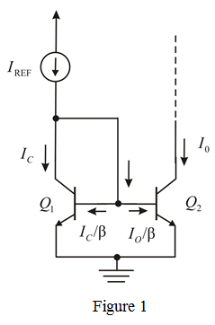
Step 2:
Since base emitter voltage of transistors is equal
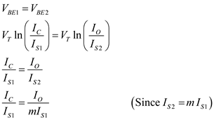
 …… (1)
…… (1)
Step 3:
From the circuit diagram, the current is,
From equation (1), substitute 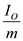 for  .
.
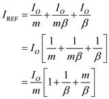
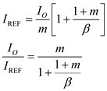
Thus, the current transfer ratio is, 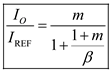
Step 4:
The intrinsic current gain is 50 and the current transfer ratio error is 10%.
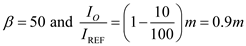
Consider the current transfer equation.
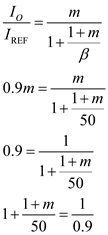
Step 5:
Simplify further.
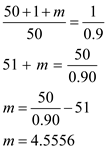
The largest current transfer ratio possible is,
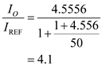
Thus, the largest current transfer ratio possible is 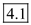.